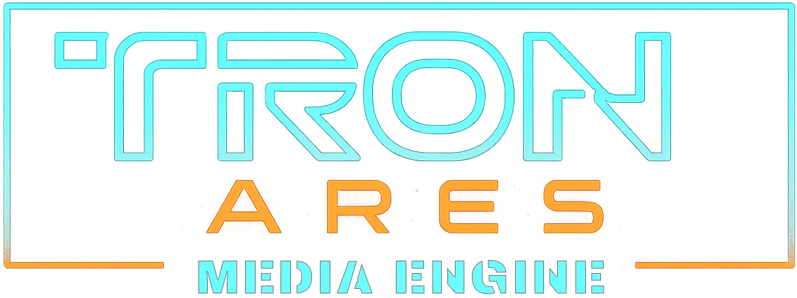

Thème : Cyan/Orange
FX Tron+
PiP
🔗
Vidéo / iFrame
Plein écran
↩ Retour infos
✕
Toutes années
Toutes catégories
↺
✕
✕
R.Alfa
Hit Music Only
⏸ Pause
↩ Retour diffusion
Stream URL
✕
URL
Titre (option)
Play
Copier lien
Astuce : tu peux aussi ouvrir directement
?streamUrl=…
Sous-titres
✕
Source
OpenSubtitles (via proxy)
Enregistrer
Enregistrer pour déployer la liste de sous-titre de (SubDL).
Titre / nom du fichier
Langues (codes, séparées par virgule)
Ex: fr, en, pt-pt, pt-br…
Rechercher
Astuce : tu peux aussi
Importer
un fichier .srt/.vtt depuis le menu 💬 (sous-titres).